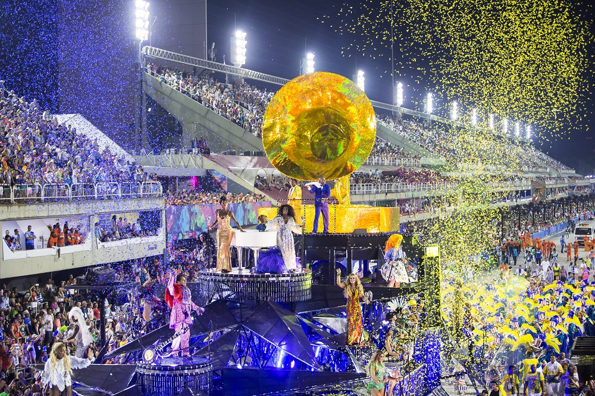

Sambódromo
O Carnaval no Sambódromo é uma das festas mais emblemáticas e grandiosas do Brasil, especialmente no Rio de Janeiro. É o palco dos desfiles das escolas de samba, onde a beleza, a criatividade e a cultura brasileira são celebradas com muita energia, cor e emoção. O Sambódromo, projetado por Oscar Niemeyer, é o centro dessa festa, localizado na Avenida Marques de Sapucaí, no Rio de Janeiro. Ele se tornou um símbolo do Carnaval carioca e atrai turistas do mundo inteiro para presenciar os desfiles. O que esperar do Carnaval no Sambódromo: Desfiles das Escolas de Samba: O Carnaval no Sambódromo é famoso pelos desfiles das escolas de samba, que competem entre si para mostrar suas habilidades em samba, dança, fantasias e carros alegóricos. Cada escola tem um tema, e sua apresentação é uma mistura de música, arte, coreografia e muito brilho. O desfile é uma verdadeira obra de arte coletiva, com meses de preparação. Carros Alegóricos: Os carros alegóricos são um dos maiores atrativos do desfile. Gigantescos, luxuosos e com muita criatividade, eles representam o tema escolhido pela escola e são um espetáculo à parte. Cada carro é uma verdadeira obra de engenharia e arte, com efeitos especiais, luzes e figuras gigantes. As Fantasias: As fantasias são outro destaque do Sambódromo. Elas são impressionantes, com um trabalho detalhado de confecção, bordados e acabamentos. Muitos dos integrantes das escolas de samba se apresentam com trajes exuberantes, que representam tanto o luxo quanto a criatividade de cada escola. A Energia do Público: O Sambódromo não é só um lugar de desfile, mas também um espaço de muita interação com o público. As arquibancadas e camarotes ficam lotados de foliões vibrando com cada passagem das escolas, criando uma atmosfera única. As vibrações do público também ajudam a criar uma energia contagiante, e as baterias das escolas de samba — com seus tambores e surdos — fazem o ambiente ainda mais pulsante. A Competição e a Emoção: Além de ser um grande espetáculo visual, o Carnaval no Sambódromo é também uma competição. As escolas de samba são julgadas em uma série de categorias, como enredo, evolução, bateria, harmonia e fantasias, entre outras. A disputa acirrada entre as escolas traz um clima de tensão e emoção, já que o prêmio de campeã é muito disputado. As Grandes Escolas de Samba: O Rio de Janeiro tem algumas das escolas mais famosas do Brasil, como Mangueira, Portela, Beija-Flor, Salgueiro, Imperatriz Leopoldinense e Vila Isabel, entre outras. Essas escolas possuem um grande número de seguidores e são conhecidas por suas apresentações grandiosas e pela importância cultural e histórica no Carnaval carioca. Camarotes e Shows: Para quem quer uma experiência mais exclusiva, o Sambódromo oferece camarotes com serviços VIP, onde os foliões podem assistir aos desfiles de uma maneira mais confortável, com bebidas, comida e até shows exclusivos. Muitas vezes, esses camarotes recebem celebridades, artistas e turistas de todo o mundo. O Sambódromo durante o Carnaval O Carnaval no Sambódromo geralmente acontece durante os dois dias de desfiles: o desfile das escolas do Grupo Especial (as escolas mais renomadas e famosas) e as escolas do Grupo de Acesso, que disputam uma vaga para o próximo ano. Além disso, também há os desfiles das escolas mirins (para as crianças) e outros eventos ligados ao Carnaval, como as escolas de samba da série A, que também têm a chance de mostrar seu talento. Dicas para quem vai ao Sambódromo: Chegue cedo: O Sambódromo fica lotado, e as filas podem ser longas, especialmente para entrar. Chegar cedo garante um bom lugar. Use roupas leves: Como o evento acontece no verão, é importante estar confortável e fresco. Fique atento aos horários: Os desfiles começam tarde e podem durar até a madrugada, então esteja preparado para ficar acordado até tarde. Prepare-se para a chuva: O tempo no Rio pode ser imprevisível durante o Carnaval, então é bom levar uma capa de chuva, especialmente se for assistir ao desfile na arquibancada. O Carnaval no Sambódromo é uma experiência única, um espetáculo de cultura, arte e emoção. Se você tiver a oportunidade de ir, será um dos eventos mais inesquecíveis que você poderá viver no Brasil!
